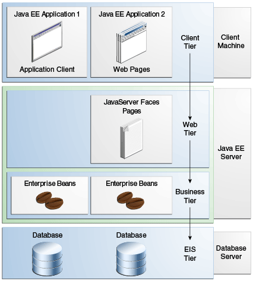
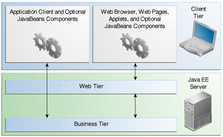
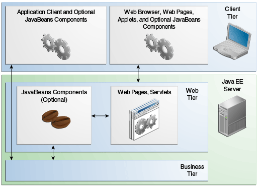
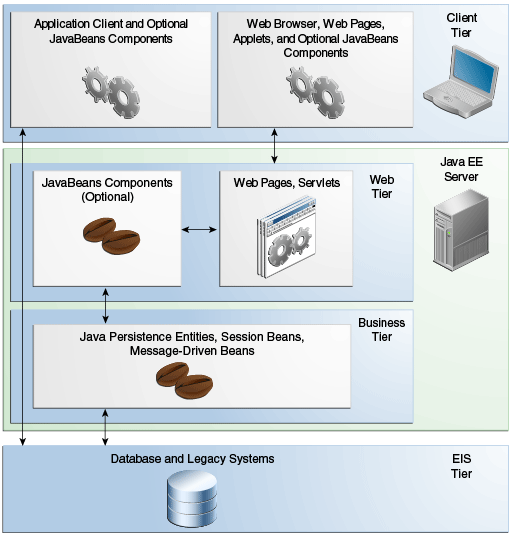

|
Plataforma Java, Edición Empresarial (Java EE) 8 El Tutorial de Java EE |
| Anterior | Siguiente | Contenidos |
La plataforma Java EE utiliza un modelo de aplicación distribuido de varios niveles para aplicaciones empresariales. La lógica de la aplicación se divide en componentes según la función, y los componentes de la aplicación que componen una aplicación Java EE se instalan en varias máquinas según el nivel del entorno Java EE de varios niveles al que pertenece el componente de la aplicación.
La Figura 1-1 muestra dos aplicaciones Java EE de varios niveles divididas en los niveles que se describen en la siguiente lista. Las partes de la aplicación Java EE que se muestran en la Figura 1-1 se presentan en Componentes de Java EE.
Los componentes del nivel de cliente se ejecutan en la máquina del cliente.
Los componentes de nivel web se ejecutan en el servidor Java EE.
Los componentes de nivel empresarial se ejecutan en el servidor Java EE.
El software de nivel del sistema de información empresarial (EIS) se ejecuta en el servidor EIS.
Aunque una aplicación Java EE puede constar de todos los niveles que se muestran en la Figura 1-1, las aplicaciones Java EE de varios niveles generalmente se consideran aplicaciones de tres niveles porque se distribuyen en tres ubicaciones. : máquinas cliente, la máquina servidor Java EE y la base de datos o máquinas heredadas en el back-end. Las aplicaciones de tres niveles que se ejecutan de esta manera amplían el modelo estándar de cliente y servidor de dos niveles colocando un servidor de aplicaciones multiproceso entre la aplicación cliente y el almacenamiento de fondo.

Aunque otros modelos de aplicaciones empresariales requieren medidas de seguridad específicas de la plataforma en cada aplicación, el entorno de seguridad de Java EE permite definir las restricciones de seguridad en el momento de la implementación. La plataforma Java EE hace que las aplicaciones sean portátiles para una amplia variedad de implementaciones de seguridad al proteger a los desarrolladores de aplicaciones de la complejidad de implementar características de seguridad.
La plataforma Java EE proporciona reglas de control de acceso declarativas estándar que son definidas por el desarrollador e interpretadas cuando la aplicación se implementa en el servidor. Java EE también proporciona mecanismos de inicio de sesión estándar para que los desarrolladores de aplicaciones no tengan que implementar estos mecanismos en sus aplicaciones. La misma aplicación funciona en una variedad de entornos de seguridad sin cambiar el código fuente.
Las aplicaciones Java EE se componen de componentes. Un componente Java EE es una unidad de software funcional autónoma que se ensambla en una aplicación Java EE con sus clases y archivos relacionados y que se comunica con otros componentes.
La especificación de Java EE define los siguientes componentes de Java EE:
Los clientes de aplicaciones y los subprogramas son componentes que se ejecutan en el cliente.
Los componentes de tecnología Java Servlet, JavaServer Faces y JavaServer Pages (JSP) son componentes que se ejecutan en el servidor.
Los componentes EJB (beans de empresa) son componentes empresariales que se ejecutan en el servidor.
Los componentes de Java EE están escritos en el lenguaje de programación Java y se compilan de la misma manera que cualquier programa en el lenguaje. Las diferencias entre los componentes Java EE y las clases Java "estándar" son que los componentes Java EE se ensamblan en una aplicación Java EE, se verifica que estén bien formados y cumplan con la especificación Java EE, y se implementan en producción, donde son ejecutados y gestionados por el servidor Java EE.
Un cliente Java EE suele ser un cliente web o un cliente de aplicación.
Un cliente web consta de dos partes:
Páginas web dinámicas que contienen varios tipos de lenguaje de marcado (HTML, XML, etc.), que son generados por componentes web que se ejecutan en el nivel web.
Un navegador web, que muestra las páginas recibidas del servidor.
Un cliente web a veces se denomina cliente ligero. Los clientes ligeros generalmente no consultan bases de datos, ejecutan reglas comerciales complejas ni se conectan a aplicaciones heredadas. Cuando utiliza un cliente ligero, estas operaciones pesadas se descargan en beans empresariales que se ejecutan en el servidor Java EE, donde pueden aprovechar la seguridad, la velocidad, los servicios y la confiabilidad de las tecnologías del lado del servidor Java EE.
Un cliente de aplicación se ejecuta en una máquina cliente y proporciona una forma para que los usuarios manejen tareas que requieren una interfaz de usuario más rica que la que puede proporcionar un lenguaje de marcado. Un cliente de aplicación normalmente tiene una interfaz gráfica de usuario (GUI) creada a partir de la API de Swing o la API de Abstract Window Toolkit (AWT), pero una interfaz de línea de comandos es ciertamente posible.
Los clientes de aplicaciones acceden directamente a los beans empresariales que se ejecutan en el nivel empresarial. Sin embargo, si los requisitos de la aplicación lo justifican, un cliente de la aplicación puede abrir una conexión HTTP para establecer comunicación con un servlet que se ejecuta en el nivel web. Los clientes de aplicaciones escritos en lenguajes distintos de Java pueden interactuar con los servidores Java EE, lo que permite que la plataforma Java EE interopere con sistemas heredados, clientes y lenguajes distintos de Java.
Una página web recibida del nivel web puede incluir un subprograma integrado. Escrito en el lenguaje de programación Java, un subprograma es una pequeña aplicación cliente que se ejecuta en la máquina virtual Java instalada en el navegador web. Sin embargo, los sistemas cliente probablemente necesitarán el complemento Java y posiblemente un archivo de política de seguridad para que el subprograma se ejecute correctamente en el navegador web.
Los componentes web son la API preferida para crear un programa cliente web porque no se necesitan complementos ni archivos de políticas de seguridad en los sistemas cliente. Además, los componentes web permiten un diseño de aplicaciones más limpio y modular porque proporcionan una forma de separar la programación de aplicaciones del diseño de páginas web. Por lo tanto, el personal involucrado en el diseño de páginas web no necesita comprender la sintaxis del lenguaje de programación Java para realizar su trabajo.
Los niveles de servidor y cliente también pueden incluir componentes basados en la arquitectura de componentes de JavaBeans (componentes de JavaBeans) para gestionar el flujo de datos entre los siguientes:
Un cliente de aplicación o subprograma y componentes que se ejecutan en el servidor Java EE.
Componentes del servidor y una base de datos
Los componentes de JavaBeans no se consideran componentes de Java EE según la especificación de Java EE.
Los componentes JavaBeans tienen propiedades y métodos get y set
para acceder a esas propiedades. Los componentes de JavaBeans usados de esta manera son
típicamente simples en diseño e implementación, pero deben ajustarse a las convenciones de
nomenclatura y diseño descritas en la arquitectura de componentes de JavaBeans.
La Figura 1-2 muestra los distintos elementos que pueden formar el nivel de cliente. El cliente se comunica con el nivel empresarial que se ejecuta en el servidor Java EE, ya sea directamente o, como en el caso de un cliente que se ejecuta en un navegador, pasando por páginas web o servlets que se ejecutan en el nivel web.

Los componentes web Java EE son servlets o páginas web creadas utilizando tecnología JavaServer Faces y/o tecnología JSP (páginas JSP). Los servlets son clases de lenguaje de programación Java que procesan dinámicamente solicitudes y construyen respuestas. Las páginas JSP son documentos basados en texto que se ejecutan como servlets pero permiten un enfoque más natural para crear contenido estático. La tecnología JavaServer Faces se basa en servlets y tecnología JSP y proporciona un marco de componentes de interfaz de usuario para aplicaciones web.
Las páginas HTML estáticas y los subprogramas se empaquetan con los componentes web durante el ensamblaje de la aplicación, pero la especificación Java EE no los considera componentes web. Las clases de utilidades del lado del servidor también se pueden empaquetar con componentes web y, al igual que las páginas HTML, no se consideran componentes web.
Como se muestra en la Figura 1-3, el nivel web, como el nivel del cliente, puede incluir un componente JavaBeans para administrar la entrada del usuario y enviar esa entrada a los beans empresariales que se ejecutan en el nivel de negocio para su procesamiento.

El código empresarial, que es la lógica que resuelve o satisface las necesidades de un dominio empresarial en particular, como banca, comercio minorista o finanzas, se maneja mediante beans empresariales que se ejecutan en el nivel empresarial o en el nivel web. La Figura 1-4 muestra cómo un enterprise bean recibe datos de programas cliente, los procesa (si es necesario) y los envía al nivel del sistema de información empresarial para su almacenamiento. Un enterprise bean también recupera datos del almacenamiento, los procesa (si es necesario) y los envía de vuelta al programa cliente.

El nivel del sistema de información empresarial maneja el software EIS e incluye sistemas de infraestructura empresarial, como planificación de recursos empresariales (ERP), procesamiento de transacciones de mainframe, sistemas de bases de datos y otros sistemas de información heredados. Por ejemplo, los componentes de la aplicación Java EE pueden necesitar acceso a los sistemas de información empresarial para la conectividad de la base de datos.
| Anterior | Siguiente | Contenidos |